Deep underground, dig up gems
no one else has, and keep them.
An iPhone game · Coming winter 2026
Follow Development on XNo two stones are ever the same.
Pick up what you dig and look as long as you like.
Just you and a pickaxe, heading underground.
You don’t need to know a thing about minerals. Kirara the fox will teach you.
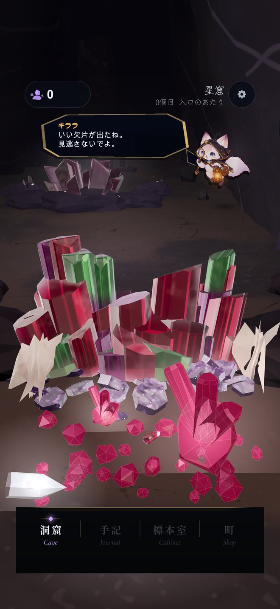
Tap the crystals growing from the cave walls to crack them open. Gems are waiting inside.
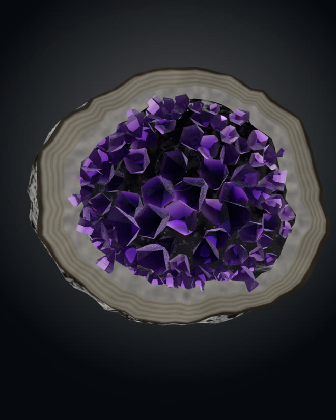
Turn each stone with your finger and look closer with a loupe. Some glow under UV light. Snap a photo of your favorites to keep.
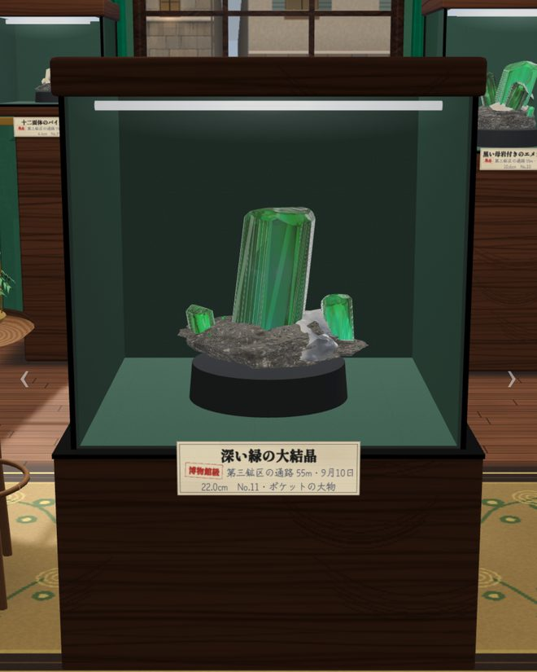
Display the ones you want to keep in the glass cases of your specimen room. Each gets a label with the cave and the date you found it.
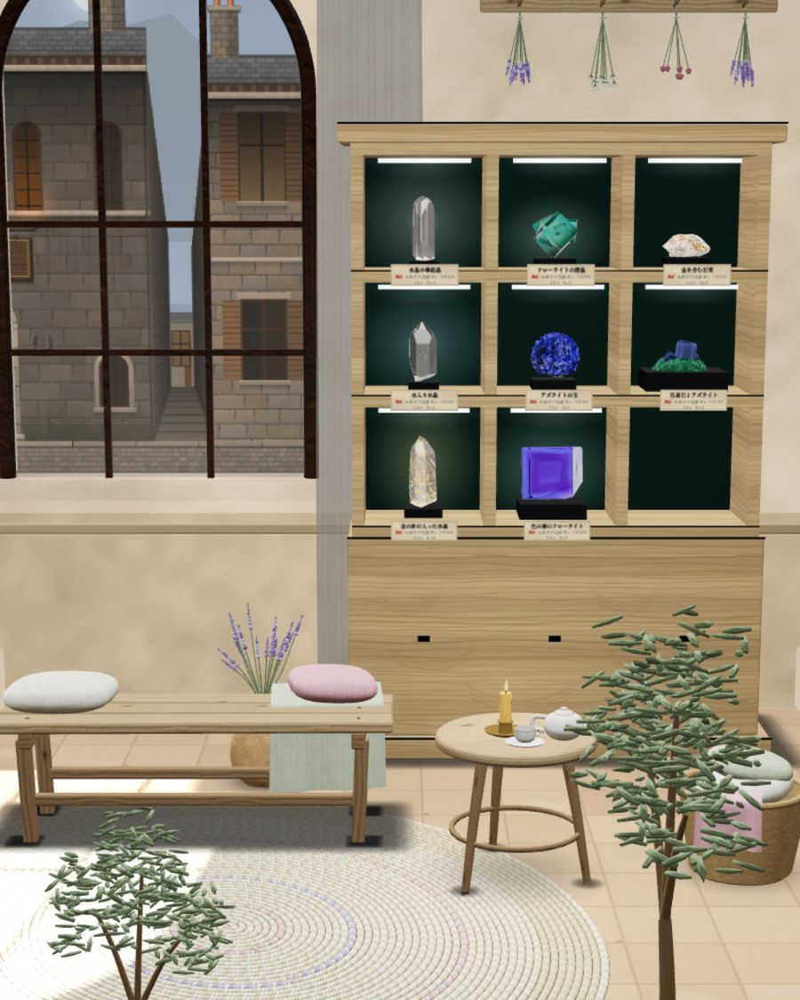
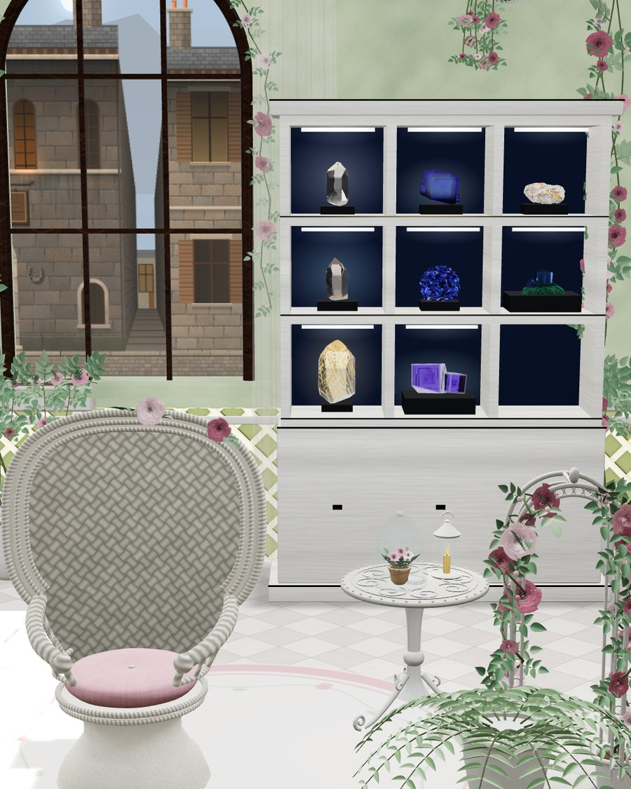
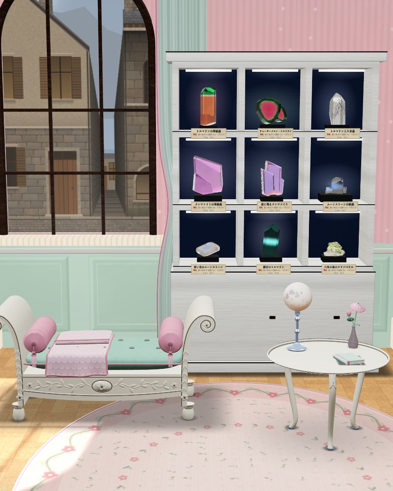
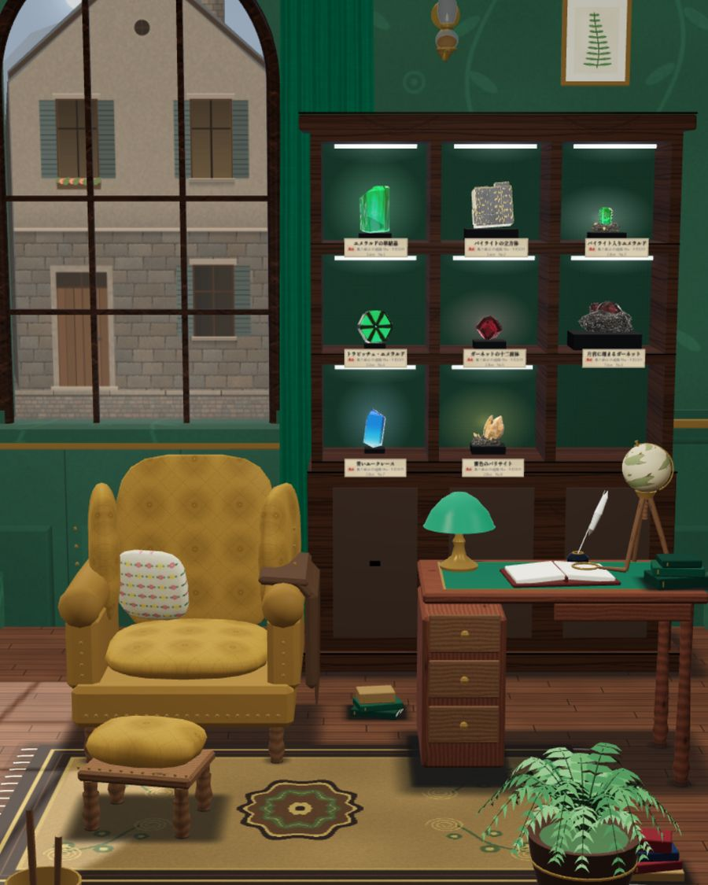
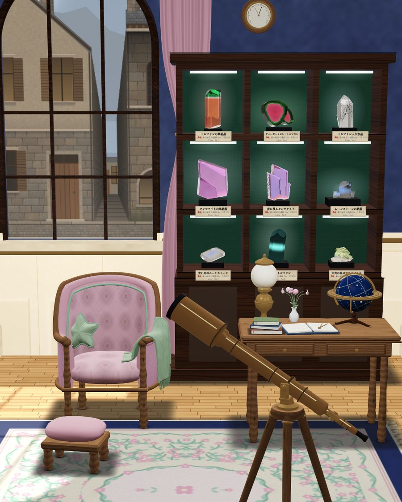
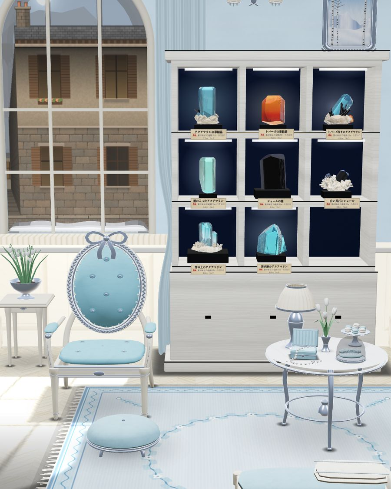
Each cave has its own specimen room. Change it into whichever room you like, and try any room out before you buy it.
The deeper you go, the more rooms the Furnisher in town has for sale.
There are plenty more than shown here.
At night, the lamps come on.
Kirara always takes the same seat.
KiraraCan this be my usual spot?
…I’m sitting here either way.
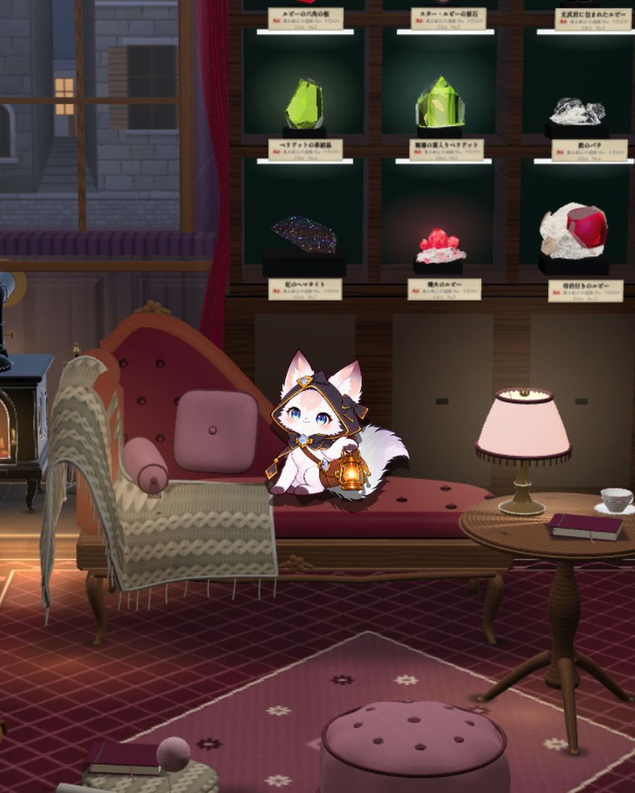
Miners Wanted
Deep below, gems grow
like pillars from the rock.
We buy what you dig.
The better the stone, the better the price.
No experience needed.
Pickaxes at the smithy next door.
The Town Gem Buyer
From the first crystal you cracked, a white orb rolled out.
As you picked it up, something stirred deep in the crack.
…Mmh. Hey, that’s mine!
That’s my orb.
You hand it back, and the fox starts to talk.
I was trapped in that stone.
…For ages.
Every time I woke up,
I still couldn’t get out.
If you hadn’t cracked it,
I’d still be asleep.
Let me hold that light.
Digging’s easier with both hands free.
I pay my debts.
I’ll show you around!
KIRARA
Your fox companion, holding the light in the caves.
She knows her gems and has something to say
about every stone you find.
She can’t lie, and what she won’t say, her tail gives away.
Finding a new kindYou dug, I held the light.
Not a bad split, right?
Finding a rare crystal…Shh.
I’m busy admiring it.
Getting one out wholeLet’s display this one under the light.
…You think so too, right?
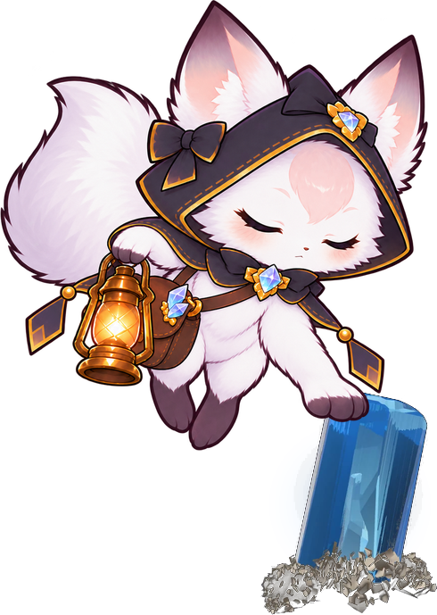
Kirara gently rests a paw
on a clear stone.
Kirara…! What was that?
Someone I don’t know
just came into my head.
Who it was, even Kirara
doesn’t know yet.
The deeper you go, the more you learn.
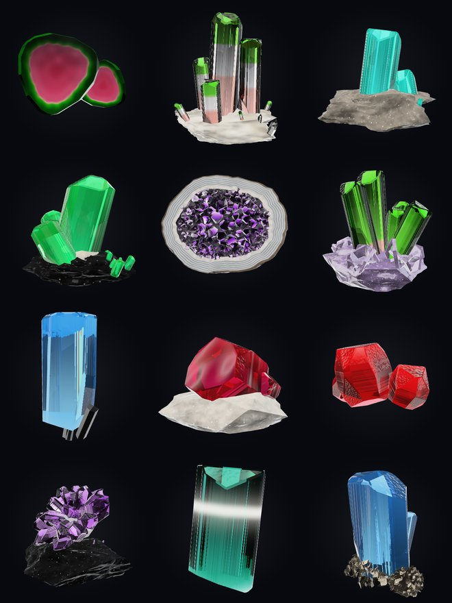
Even stones of the same kind differ in shape, size, and quality. There are 7 caves. Deeper caves have different scenery, and different gems to find.
Quartz, amethyst, aquamarine, emerald, ruby, topaz, fluorite, tourmaline, peridot, kunzite, garnet, opal, moonstone, azurite, calcite, pyrite, hematite, schorl, and more.
No stamina. No daily quests.
A few minutes before bed, or a whole lazy Sunday.
KiraraAm I waiting? Not telling.
…Don’t look at my tail.
I share in-progress screens as I go.
See it in action in the video pinned on X.